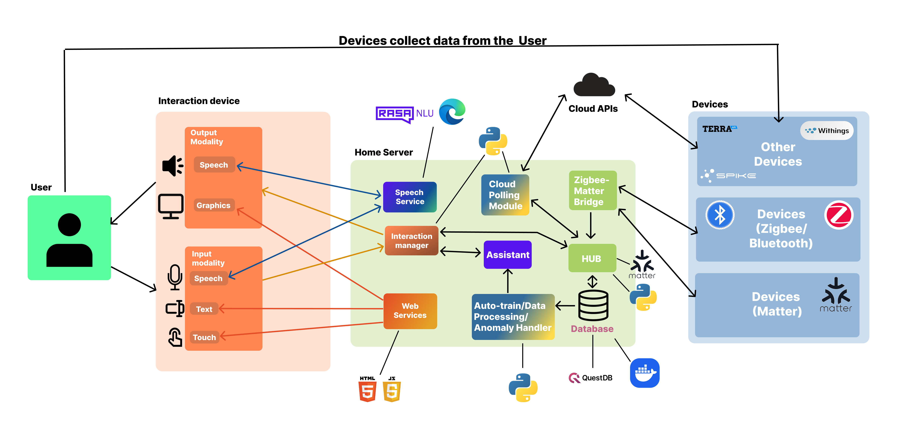
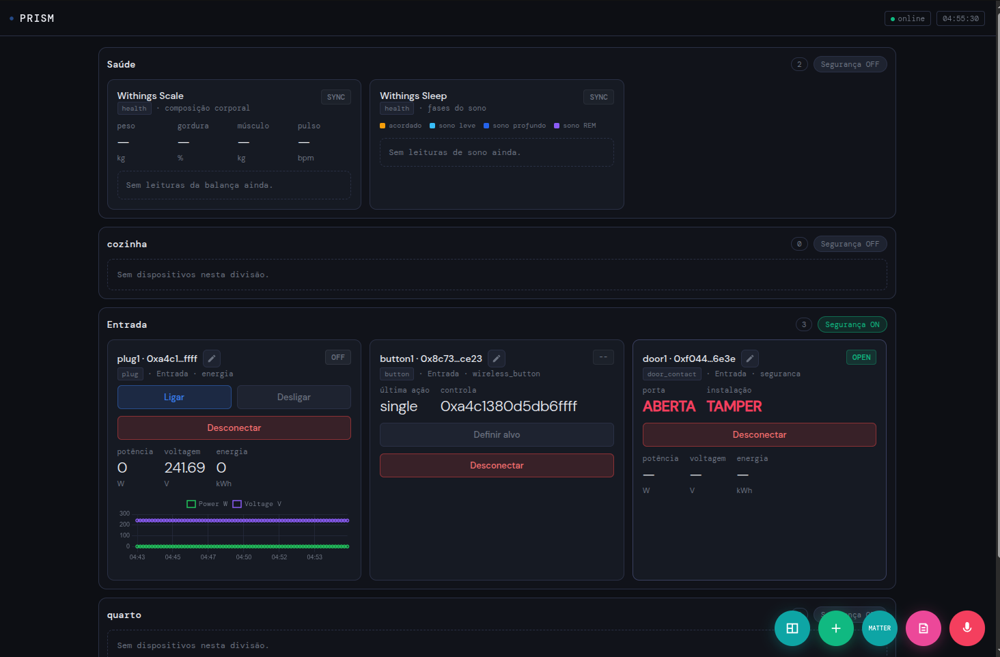

The PRISM architecture comprises three main layers: the device layer (sensors and endpoints), the integration layer (data harmonization and normalization), and the applications and dashboard layer (visualization and user interfaces). Each layer plays a crucial role in collecting, processing, and presenting residential monitoring data to support continuous health monitoring and smart home automation.

While similar systems exist, PRISM distinguishes itself through its comprehensive device integration approach. We leverage proprietary APIs to extract data directly from manufacturer platforms, and employ a smart assistant that automates Zigbee device pairing and facilitates Matter device integration. Additionally, we integrate the Withings API to seamlessly incorporate health data from their scales and sleep trackers, providing a unified health monitoring experience.

The PRISM dashboard provides an intuitive interface for monitoring health-related data collected from the residential environment. It enables users to track trends, identify patterns, and gain insights into well-being over time through interactive graphs, real-time data visualization, and customizable alert notifications.
The system integrates a voice assistant that intelligently processes user instructions alongside an intuitive touch interface for device control. Users can easily turn devices on or off, manage home rooms, add new devices (both Zigbee and Matter protocols), and access alert history—all accessible through dedicated control buttons conveniently positioned on the dashboard's right sidebar.
With this prove of concept, we have achieved the following results, which demonstrate the potential of the PRISM infrastructure for smart home health monitoring and its contribution to the field of ambient assisted living.
Creation of a modular and flexible infrastucture capable of handling multiple devices
Smart Assistant capable of handling multiple connected devices through speech and text interaction, enabling device control, real-time house information retrieval (e.g., temperature), and presentation of contextual smart home data to the user
Integration of the Withings API and health devices, enabling collection, monitoring, and historical visualization of user health-related data through dashboard graphs
Implementation of a data history engine and dashboard for visualizing temporal trends and significant changes in residential activity
A gateway platform that reliably bridges physical devices to the backend infrastructure, ensuring seamless communication and data flow